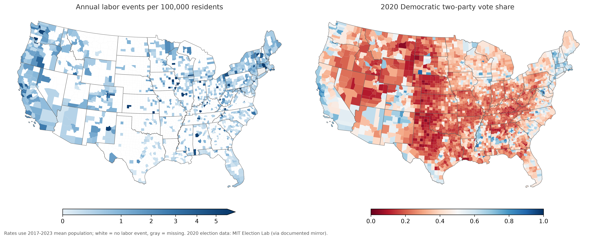
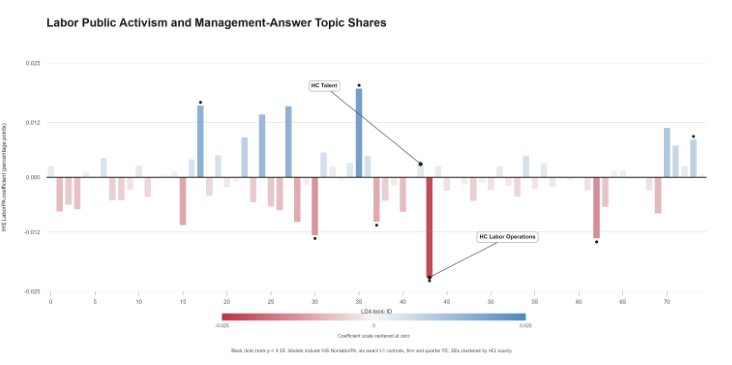
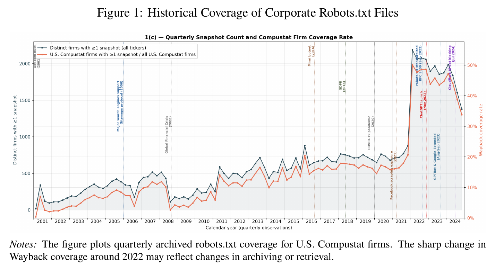
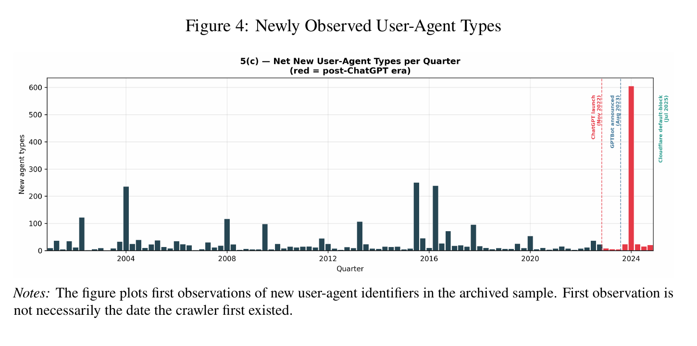

Research agenda
Research
Across these projects, I examine how stakeholders and technology shape what firms disclose, how corporate information is used, and how firms govern access to it.
Working Papers
Job Market Paper
Public Activism and Labor-Related Corporate Disclosure
Working paper October 2026 draft
Award The Sue Hrasky Best PhD Paper Prize, BAFA, 2026.
How does local public activism influence corporate disclosure when it does not directly target the firm?
Greater non-firm-specific labor activism in a firm's headquarters county is associated with less discussion of current labor operating conditions relative to talent-management information in subsequent earnings calls.
Abstract
This paper examines whether public activism is relevant to corporate disclosure even when the underlying public activity is not directly targeted at the focal firm. Using non-firm-specific labor-related public activism in the same county as firms' headquarters, I find that greater local public activism is associated with less discussion of current labor-related operating conditions relative to talent-management information in subsequent earnings calls. Consistent with the potential informational relevance of public activism, the association is more pronounced when public activism has greater attention-generating potential and varies with the relevance and reach of surrounding audiences. The findings suggest that information about the current prominence of stakeholder concerns may be relevant to firms' disclosure choices, even without direct firm-specific activist pressure. More broadly, they highlight how the potential consequences of investor-facing disclosure may vary with issue prominence and the relevance of broader audiences.
Selected Figures


Selected presentations EAA Doctoral Colloquium 2026; IESE Seminar 2026; BAFA Annual Conference 2026; JIAR Annual Conference 2026; University of Zurich DAR Workshop 2025.
Working paper
NGO Activism and the Supply of Corporate Information
Working paper Draft available on request
How is environmental NGO targeting related to climate-transition disclosure and firms' demand for green-technology workers?
Targeting is associated with more discussion of climate-transition projects and infrastructure relative to renewable technologies in earnings calls, alongside lower demand for specialized green-technology workers.
Abstract
This paper examines how NGO activism shapes corporate disclosure and firms' demand for green-technology workers. Environmental NGO targeting is associated with greater discussion of climate-transition projects and infrastructure relative to renewable technologies in subsequent earnings calls, alongside lower demand for specialized green-technology workers. The findings suggest that external stakeholder pressure may shape both investor-facing communication and corporate hiring decisions, potentially leading to divergent responses in environmental disclosure and technological activities.
Working paper
How Firms Govern Automated Access to Corporate Information: Evidence from Robots.txt
Working paper November 2026 draft
How do firms govern automated access to publicly available corporate information?
General access restrictions are widespread in archived robots.txt records. Historical crawler-specific policies are associated with later restrictions on newly introduced AI-related identifiers, though the evidence is less conclusive under stricter comparisons.
Abstract
We examine how publicly traded firms govern automated access to publicly available corporate information. Using historical robots.txt records for 5,877 U.S. firms from 2001 to 2024, we document substantial variation in the scope of access restrictions and the treatment of individual web crawlers. We find that general access restrictions are widespread, while crawler-specific restrictions are less common. Website software explains part of this variation, but historical crawler-specific policies also predict subsequent restrictions on newly introduced AI-related identifiers. This association is concentrated in changes involving named crawlers rather than general website-access rules, although the evidence is less conclusive under stricter comparisons. Our findings identify automated information access as a distinct dimension of corporate information policy, extending beyond firms' decisions about what information to disclose.
Selected Figures


Presentation REAP Workshop.
Work in Progress
From Open Access to Data Licensing: Legal Protection and the Monetization of Corporate Information
How do legal protection and data value shape firms' choices between open access and data licensing?
Abstract
This project examines how legal protection shapes firms' ability to capture the economic value of publicly available information. While corporate data may be valuable to third-party information intermediaries, firms' ability to monetize such data depends partly on their capacity to restrict unauthorized collection and reuse. The study investigates how legal protection and data value jointly influence firms' choices among open access, contractual restrictions, and commercial data licensing. It further explores whether these governance mechanisms affect firms' incentives to produce and disseminate information.
Published Work
Same Interdependent Risk, Different Valuation: How Risk Representation Shapes Ecosystem Investment Decisions
Journal of Management Scientific Reports, 2026